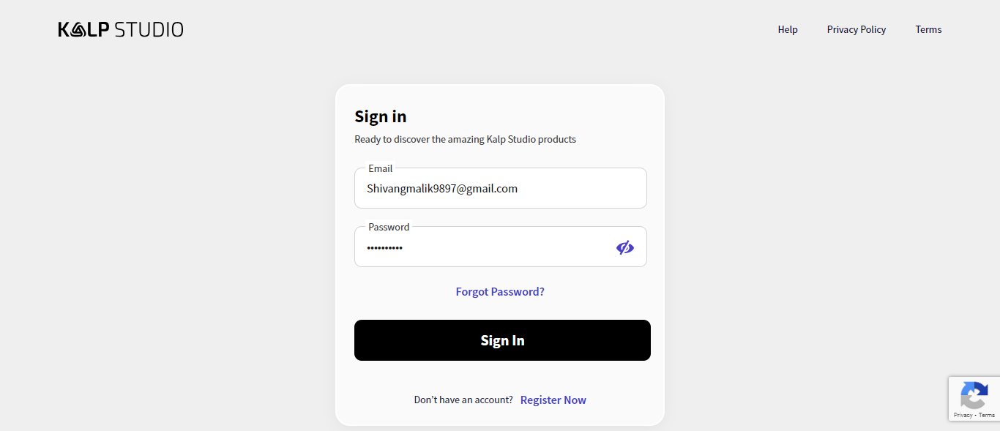

-
Verify the settings page feature
2:39:49 pm / 00:01:11:496 Fail
Verify the settings page feature
10.12.2024 2:39:49 pm 10.12.2024 2:41:00 pm 00:01:11:496 · #test-id=1FailVerify the add gateway functionality (cashfree)Given the user navigates to login pageWhen user enters email as "Shivangmalik9897@gmail.com" and password as "Qwerty@123"And the user clicks on the Login buttonThen the user should be redirected to the Appoverview PageHooks.Hooks.addScreenshot(io.cucumber.java.Scenario)Verify the add gateway functionality (cashfree)And user clicks on registeranapp buttonStep skippedThen user should redirect to the register an app screenStep skippedWhen user enter the all valid detailsStep skippedAnd user clicks on submit buttonStep skippedThen application should be addedStep skippedAnd user redirect to the appoverview pageStep skippedWhen user clicks on registered appname from the applistStep skippedThen it should redirects to the application home pageStep skippedWhen user clicks on settings form side menuStep skippedThen it should redirects to the generate api keys sectionStep skippedWhen user clicks on paymentgatewaysettingsStep skippedThen it should redirects to the add gateway screenStep skippedWhen user click on add gateway buttonStep skippedThen it should redirects to the step1 screenStep skippedWhen user select currency as "Rupeess"Step skippedAnd user select gateway as "CASHFREE"Step skippedAnd user enter details in below filedsClient Id TEST101174745b697f67b69cc2101fb447471101 Client Secret cfsk_ma_test_d6de65fcdabd3fb83f1d658c142c1ffb_bf823b8e Step skippedAnd user select payment methodsStep skippedAnd click on submit buttonStep skippedThen it should redirect to the step 2Step skippedWhen user enter click on mark as done buttonStep skippedThen it should redirect to the step 3Step skippedWhen user click on mark as done buttonStep skippedThen status of the all three steps should be mark as inverificationStep skipped
-
org.openqa.selenium.TimeoutException
1 tests
org.openqa.selenium.TimeoutException
1 failedStatus Timestamp TestName Fail 14:40:17 pm Then the user should be redirected to the Appoverview Page Verify the settings page feature.Verify the add gateway functionality (cashfree).Then the user should be redirected to the Appoverview Page
-
@sanity
1 tests
@sanity
1 failedStatus Timestamp TestName Fail 14:39:49 pm Verify the add gateway functionality (cashfree) Verify the settings page feature.Verify the add gateway functionality (cashfree)
Started
Oct 12, 2024 02:39:47 pm
Ended
Oct 12, 2024 02:41:00 pm
Features Passed
0
Features Failed
1
Features
Scenarios
Steps
Timeline
Tags
| Name | Passed | Failed | Skipped | Others | Passed % |
|---|---|---|---|---|---|
| @sanity | 0 | 1 | 0 | 0 | 0% |